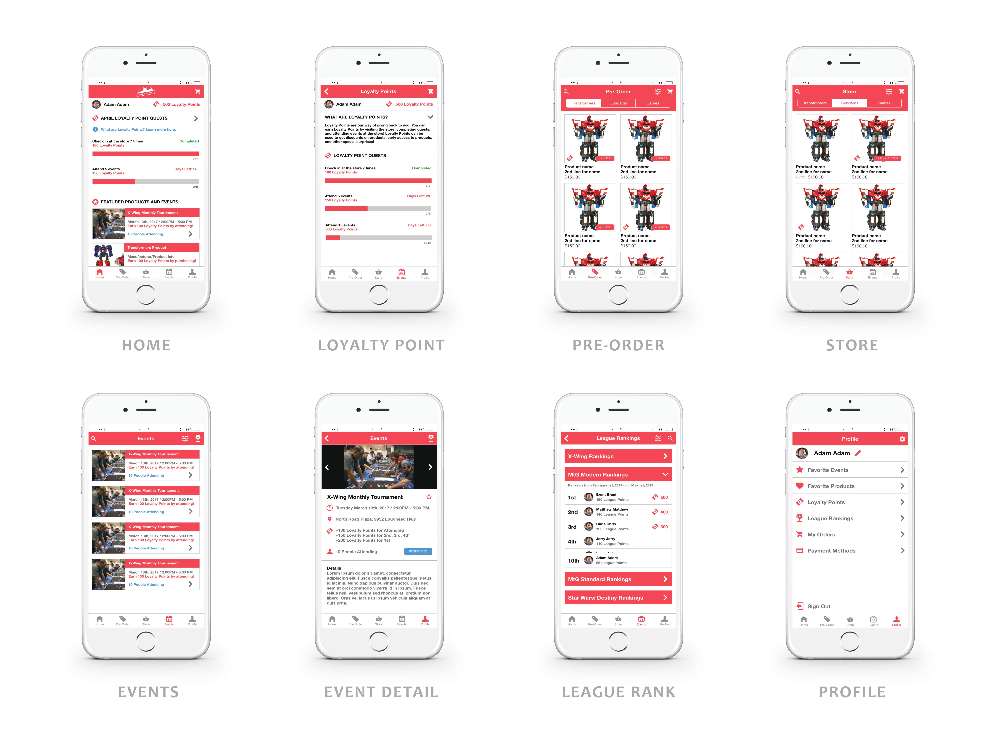
Persona
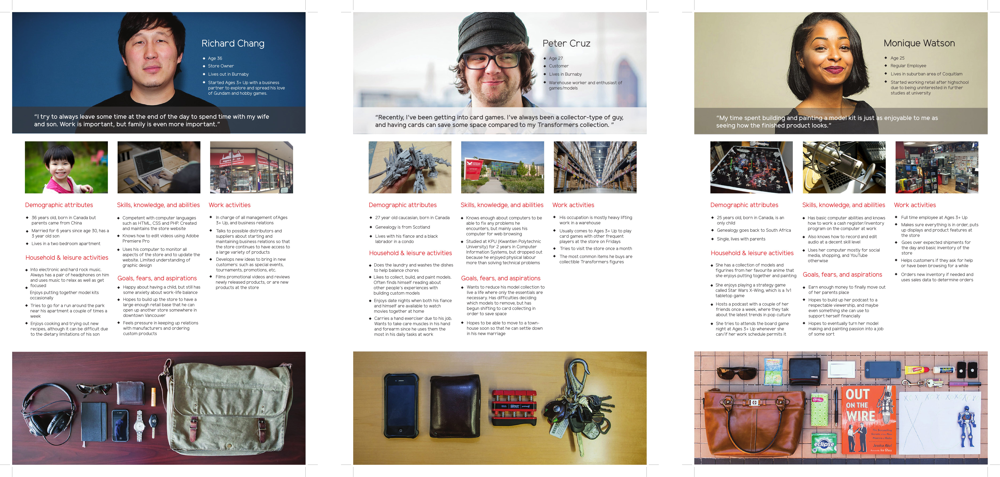
User Researches
 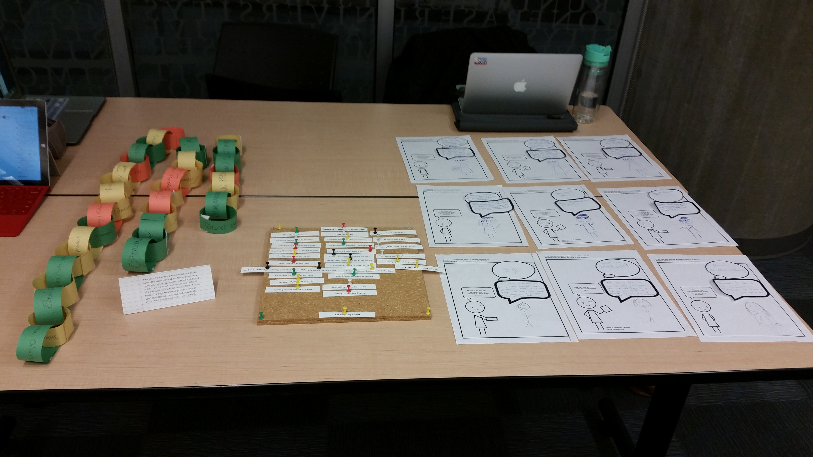
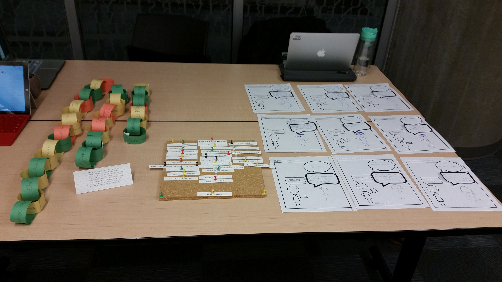
Journey Framework
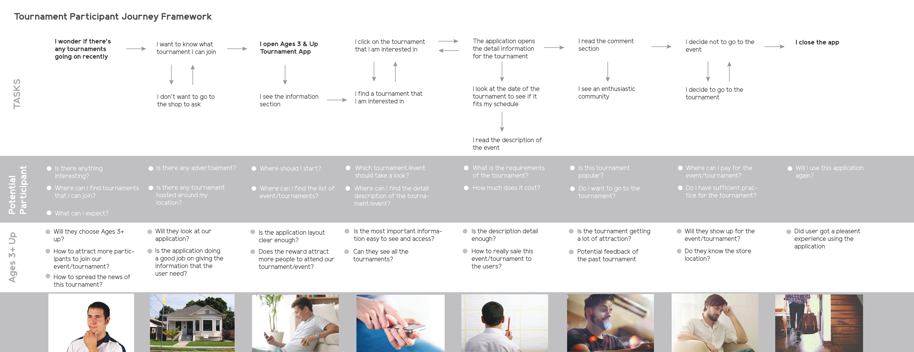
Iteration
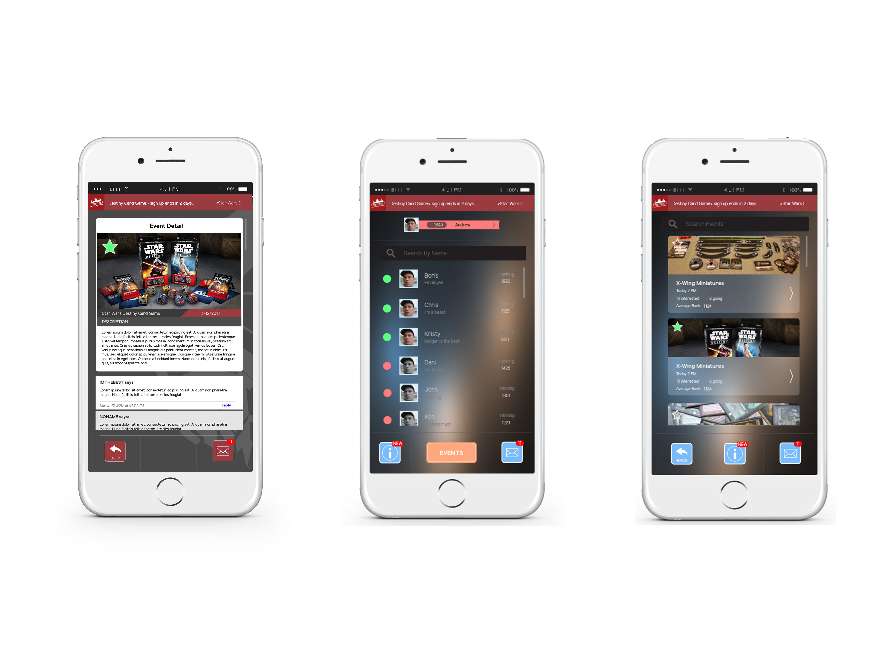
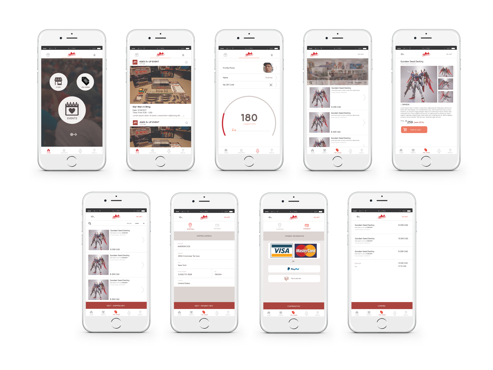
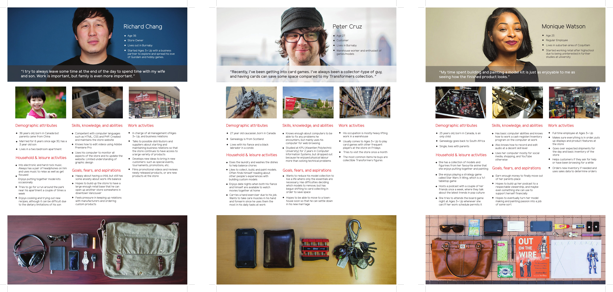
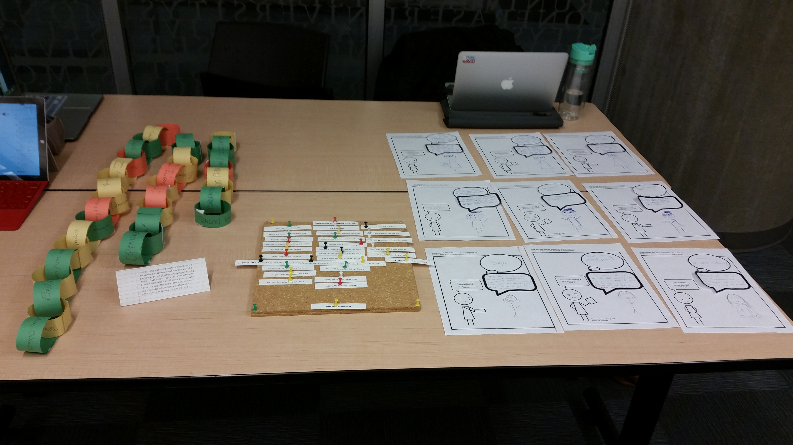
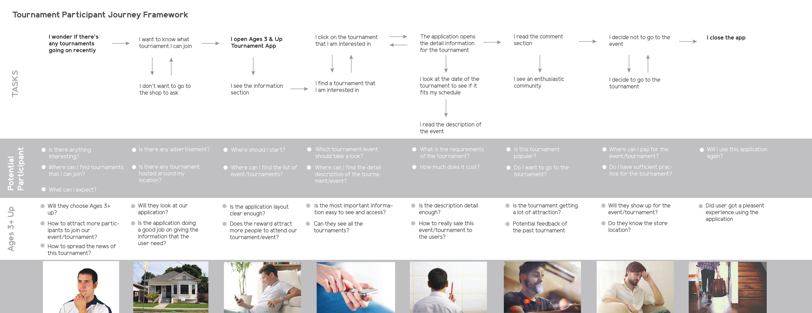
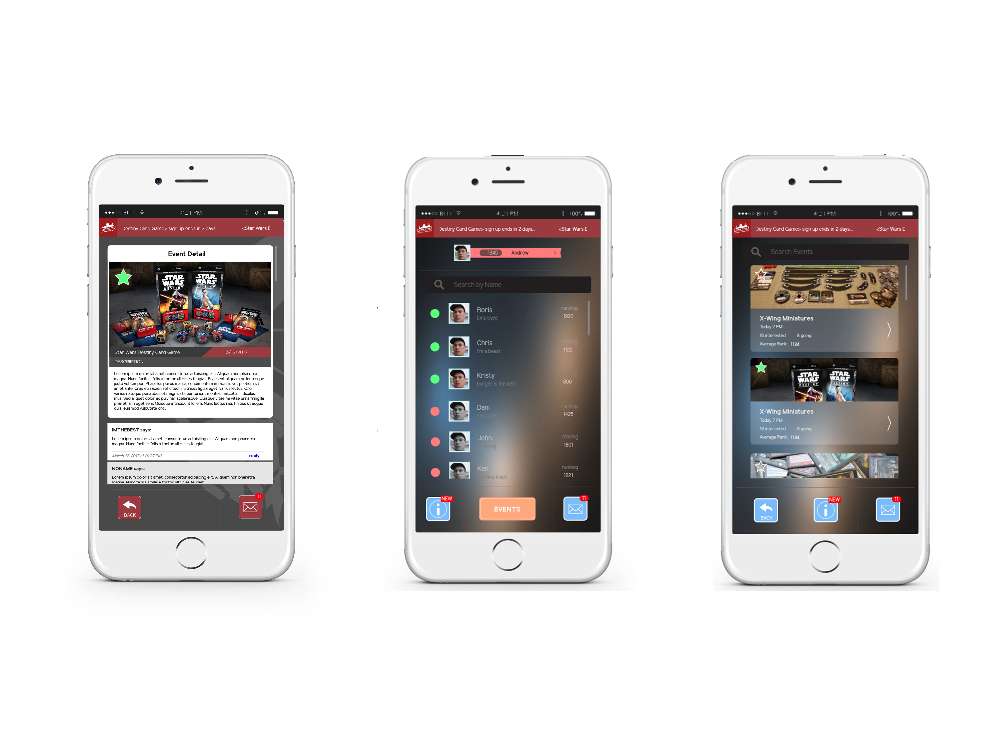
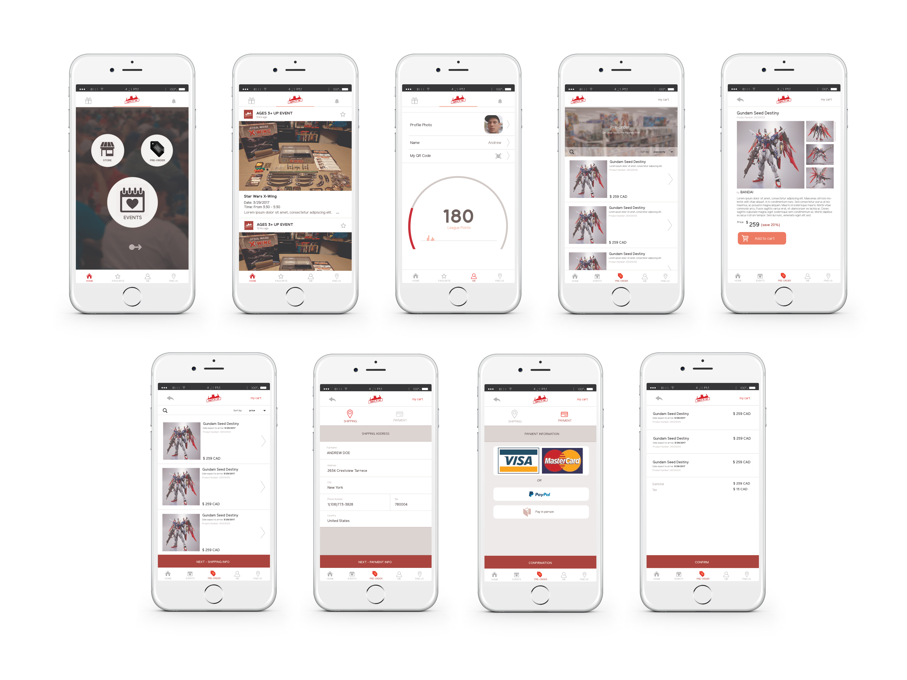
The Ages 3+ Up app encourages online customers to visit the Ages 3+ Up physical store location by not only providing a sophisticated event system with leagues and ranking, but also a loyalty point system that rewards customers for attending events, visiting the store, and for the competitive minded, even prizes for winning events! These features together help to promote the community driven aspects of Ages 3+ Up, by encouraging the demographic of online customers to come to the store and grow the community while making new friends!